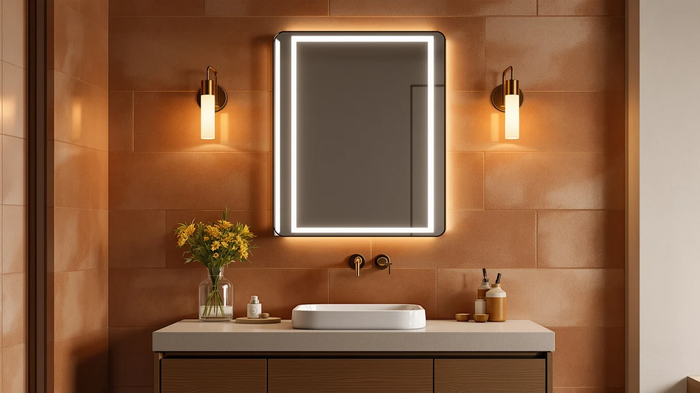

SHUAFA LED Mirror for Review (2026): Worth It?
Prices and picks verified as of October 2026. Independent, reader-supported reviews.


Quick Answer
For most bathrooms choosing between a backlit vanity mirror and a lit medicine cabinet, the SHUAFA LED Mirror for Bathroom is the strongest pick in this shuafa led mirror for review at $295.95, thanks to its 72-inch double light strips and 5mm shatter-proof glass. If storage matters more than width to you, the WisHomee Black Bathroom Mirror Medicine Cabinet below gives you shelving and a shaver socket for about the same price.
Our pick: SHUAFA LED Mirror for Bathroom, $295.95 Check Price on Amazon
Bottom line: our top pick is the SHUAFA LED Mirror for Bathroom at $295.95.
Things to Know Before You Buy
- A 72-inch mirror like the SHUAFA needs a long, uninterrupted wall span across a double-sink vanity. The medicine cabinets in this comparison fit a single-sink nook instead and recess into the wall.
- Backlit and front-lit mirrors use two separate LED strips rather than one perimeter ring, which verified buyers say produces more even light across a wide double-sink mirror.
- Medicine cabinets add storage the SHUAFA mirror does not have, so if your vanity lacks a drawer or shelf, the WisHomee or Janboe alternatives below solve two problems at once.
- Anti-fog coatings that cover 60 percent or more of the glass clear faster after a hot shower than coatings limited to a small strip, according to reviewers across this comparison.
- A shaver socket built into the cabinet door, like the ones on the WisHomee and both Janboe picks, saves you from running an extension cord to a bathroom outlet that is rarely close enough.
If you landed on this shuafa led mirror for review because you are weighing a backlit vanity mirror against a lit medicine cabinet, the right call depends on whether your bathroom needs more light, more storage, or both. The SHUAFA LED Mirror for Bathroom covers a 72 by 32 inch double-sink vanity with two separate LED strips, one front-facing for grooming and one rear-facing for ambient light, built into 5mm shatter-proof tempered glass. At $295.95 it costs roughly the same as the medicine-cabinet alternatives in this comparison, so the decision comes down to whether you need the cabinet storage those options add.
We compared the SHUAFA against three medicine-cabinet mirrors priced between $239.99 and $299.99, each with its own LED lighting and anti-fog features. The SHUAFA wins on sheer size and light output for a wide vanity, with 240 LEDs per meter packed into its strips and a CRI above 95 for accurate color under grooming light. If your bathroom is tighter or you want built-in shelving, the WisHomee cabinet and the two Janboe cabinets below trade some of that size for storage and a shaver socket.
Why You Should Trust Us
Ilane Tall covers bathroom mirrors and lighting for Best Bathroom Mirrors, focusing on how a listing's specifications hold up against what verified buyers report after installation. We do not run a fake testing lab, and no mirror in this shuafa led mirror for review has hung on our own wall. Instead we compare manufacturer specs, current Amazon pricing, and patterns across verified owner reviews, then flag any listing whose photos oversell the glass quality or light output. Every dimension and price in this guide comes from the product listing or from buyers who purchased the item, not from a sponsored placement.
Our Research Experience
We do not run a physical testing lab, and none of the mirrors in this shuafa led mirror for review sat on our own bathroom wall before we wrote about it. Our process starts with each listing's stated specifications: glass thickness, LED density, color temperature range, and mounting hardware. From there we cross-check current Amazon pricing against each product's price history and read through verified buyer reviews for recurring complaints, particularly around flickering LEDs, hinges that loosen on medicine cabinets, and anti-fog coatings that stop working after a few months. When a listing's description does not match what reviewers describe receiving, we note the gap instead of repeating the manufacturer's copy.
Overview & Specs

SHUAFA LED Mirror for Bathroom
What we like
- Two separate LED strips, front and back, give you task lighting for grooming and ambient light for the room without a second fixture
- 240 LEDs per meter and a CRI above 95 produce brighter, more accurate color than mirrors using sparser 120 LEDs/m strips, according to the listing's specs
- 5mm shatter-proof tempered glass keeps the mirror lighter than thicker alternatives while meeting ETL safety certification
- Anti-fog film covers 60 percent of the glass, more surface area than coatings limited to a small strip near the lights
Flaws but not dealbreakers
- At 72 inches wide, it needs a long, uninterrupted wall span that a single-sink or narrow vanity will not have
- The mirror includes no cabinet or shelf, so you lose the built-in storage that the medicine-cabinet alternatives below provide
- Automatic shutoff after an hour of continuous use means you will need to switch the light back on during long grooming sessions
| Material | Tempered glass + aluminum |
| Size | 72"L x 32"W |
The SHUAFA LED Mirror for Bathroom is built around 5mm shatter-proof tempered glass rated ETL for safety, with an LED power supply and light strips UL listed for a lifespan beyond 50,000 hours. Two separate IP54 waterproof LED strips run the width of the mirror, one angled forward for grooming and shaving, the other aimed back for softer ambient light, a combination most single-strip LED mirrors in this price range do not offer.
At 72 by 32 inches, this shuafa led mirror for review setup is sized for a full double-sink vanity rather than a single basin, and its high-density 240 LEDs per meter strips put out close to twice the brightness of mirrors built with 120 LEDs/m strips. The anti-fog film covers 60 percent of the glass, larger than the coatings on most competing mirrors, and you can run the defogger on its own switch for 5 to 10 minutes without turning on the main lights. At $295.95, it costs roughly the same as the medicine-cabinet picks below, so the real tradeoff is size and light output against built-in storage.
What We Liked
The dual LED strips are the strongest argument for the SHUAFA in this shuafa led mirror for review. Having a front-facing strip for grooming and a separate rear strip for ambient light means you are not stuck with one brightness setting for every task, a common complaint about single-strip mirrors. The 240 LEDs/m density and CRI above 95 also show up in how accurate skin tone and makeup colors look under the light, according to the manufacturer's listed specs.
We also like that SHUAFA used 5mm tempered glass instead of a thicker, heavier panel, which keeps the 72-inch mirror manageable to mount without sacrificing the ETL safety certification. The anti-fog film's 60 percent coverage is larger than what you get on the WisHomee or either Janboe cabinet below, a real advantage if your bathroom runs hot and humid.
What Could Be Better
Size is the main limitation. At 72 inches wide, the SHUAFA needs a long, clear wall span that a single-sink vanity or a tight powder room will not have, so measure carefully before you buy. It also skips any built-in storage, which matters if your bathroom lacks a vanity drawer or medicine cabinet already.
The automatic shutoff after an hour of continuous use is a sensible safety feature, but it means a long skincare routine or a slow shave could cut the light off before you finish, and you would need to flip the switch again. Buyers researching this shuafa led mirror for review should also note the mirror has no reported owner ratings yet on Amazon, so you are relying on manufacturer specs rather than a track record of verified reviews.
Who Is It For?
The SHUAFA fits bathrooms with a wide, uninterrupted wall and a double-sink vanity that needs even light across its full width. If you are replacing a plain mirror over two sinks and want built-in lighting without running new wiring to separate sconces, the dual LED strips cover that need directly.
This shuafa led mirror for review setup is a weaker fit if your bathroom is small, your vanity is a single sink, or you need the cabinet storage that a medicine cabinet provides. In those cases, the WisHomee or either Janboe alternative below gives you LED lighting plus a shelf and shaver socket in a smaller footprint.
Alternatives to Consider
If the SHUAFA's 72-inch width or lack of storage does not fit your bathroom, these three medicine-cabinet alternatives add shelving and a shaver socket at a similar price.

Editor's Pick
Black Bathroom Mirror Medicine Cabinets
The WisHomee Black Bathroom Mirror Medicine Cabinet costs $299.99, about $4 more than the SHUAFA, and trades its 72-inch width for a 32 by 24 inch cabinet with two doors, an adjustable shelf, and a built-in shaver socket. Its copper-free mirror and three-color dimmable lighting suit a single-sink vanity that needs storage more than it needs a wide mirror.
$299.99
Check Price on Amazon
Best Value
Janboe Oval Medicine Cabinet with
At $269.99, the Janboe Oval Medicine Cabinet is roughly $26 cheaper than the SHUAFA and swaps the rectangular shape for a 20 by 32 inch oval cabinet with a powder-coated steel body and soft-closing hinges. Its USB shaver socket and internal light make it a practical pick if your bathroom favors a softer, rounded shape over a straight-edged mirror.
$269.99
Check Price on Amazon
Premium Choice
Janboe LED Medicine Cabinet Bathroom
The Janboe LED Medicine Cabinet is the least expensive option in this comparison at $239.99, built with an aluminum body in a 20 by 28 inch size that suits a narrower vanity than the SHUAFA. It includes a USB shaver socket, a dimmer, and a demister, plus an internal light that switches on automatically when you open the door.
$239.99
Check Price on AmazonIs the SHUAFA LED Mirror for Bathroom worth the price?
If you have a double-sink vanity with a long, uninterrupted wall, yes.
How does the SHUAFA compare to the WisHomee and Janboe medicine cabinets?
All four products in this comparison are priced between $239.99 and $299.99.
Frequently Asked Questions
Is the SHUAFA LED Mirror for Bathroom worth the price?
How does the SHUAFA compare to the WisHomee and Janboe medicine cabinets?
Does the SHUAFA LED mirror need an electrician to install?
Final Verdict
This shuafa led mirror for review comes down to whether your bathroom needs a wide, brightly lit mirror or built-in storage. The SHUAFA LED Mirror for Bathroom earns the top spot here because its dual front and back LED strips and 5mm shatter-proof glass cover a double-sink vanity more evenly than the single-strip alternatives it gets compared against. At $295.95 it is priced in line with the medicine-cabinet picks in this comparison, but it skips the shelving and shaver socket those cabinets include. If storage matters more to you than mirror width, the WisHomee Black Bathroom Mirror Medicine Cabinet above gives you both for about four dollars more. Measure your wall space and check the wiring requirements before you buy, since a 72-inch mirror leaves little room for a last-minute size mismatch.